海关风险防控全球信息情报搜集处理平台
面向跨境贸易风险研判、海关合规监测与政策情报分析的本地化智能平台。系统以主题为牵引，从全球公开信息源持续采集、清洗、结构化、打标、入库，并生成有观点、有层次、有论据的智能报告。
React + FastAPI 本地系统
SQLite WAL + FTS5
2026-07-04
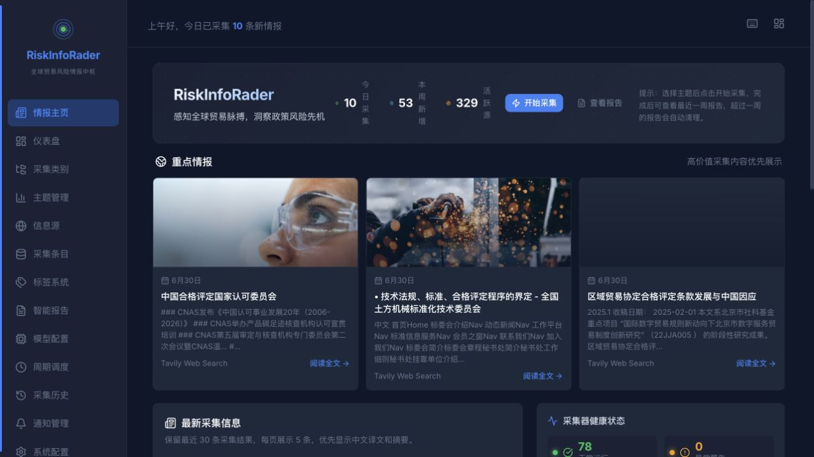
把全球贸易与监管变化，转换为可筛选、可追踪、可引用的风险情报资产。
平台不是普通新闻聚合器，而是一条从“信息源”到“研判报告”的处理流水线：采集有范围，入库有结构，标签有体系，报告有证据链。
实时统计面板把采集量、分类、语种、来源健康汇成一个总览。
仪表盘用于回答三个问题：现在有多少情报？风险集中在哪些分类？哪些采集器正在稳定产出？数据直接来自后端 `/api/v1/stats/dashboard`。
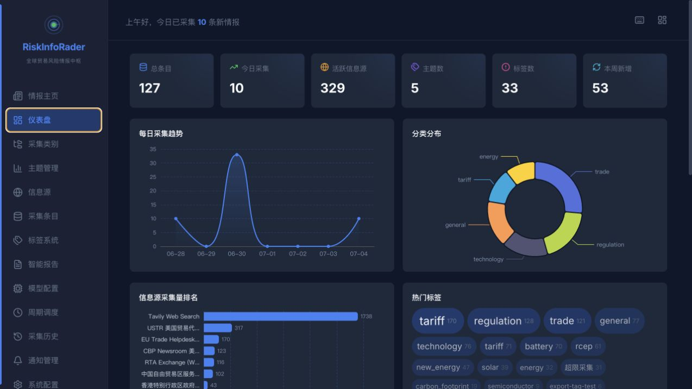
海关风险防控面对的不是“缺信息”，而是信息过载、来源分散与证据难复用。
平台围绕公开源采集、主题化过滤、结构化入库、自动报告四个环节，降低人工盯源、复制粘贴和重复整理成本。
来源分散
官方公告、RSS、搜索引擎、网页抓取、通用 JSON API、国际组织与海外媒体分散在不同站点和语言环境中。
噪声密集
网页导航、版权、站内推荐、重复新闻、无发布日期条目容易污染检索结果和后续报告。
研判链条断裂
如果情报没有批次、来源、标签、时间窗口和原文链接，后续报告很难追溯，也难以形成可复核证据链。
首页就是情报值班台。
用户进入系统即可看到今日采集、本周新增、活跃源数量、重点情报卡片、最新采集信息、采集器健康状态和活跃主题。
多频道信息源管理：官方、RSS、网页、搜索、JSON API 统一配置。
信息源页面支持已配置与备用未配置分组、渠道筛选、层级折叠、搜索与连接验证。当前可用连接器包括 `api_search`、`rss`、`web_scrape`、`official`、`targeted_scrape`、`json_api`。
- 官方 API 与公开公告页用于政策和监管权威信号。
- RSS 和新闻源用于监测突发事件、查发案例与国际动态。
- 搜索与定向抓取用于补齐主题关键词覆盖面。
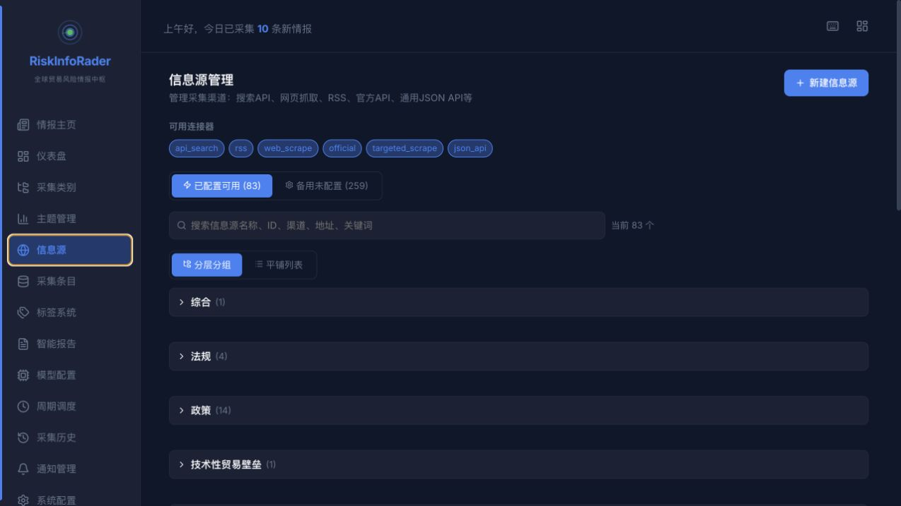
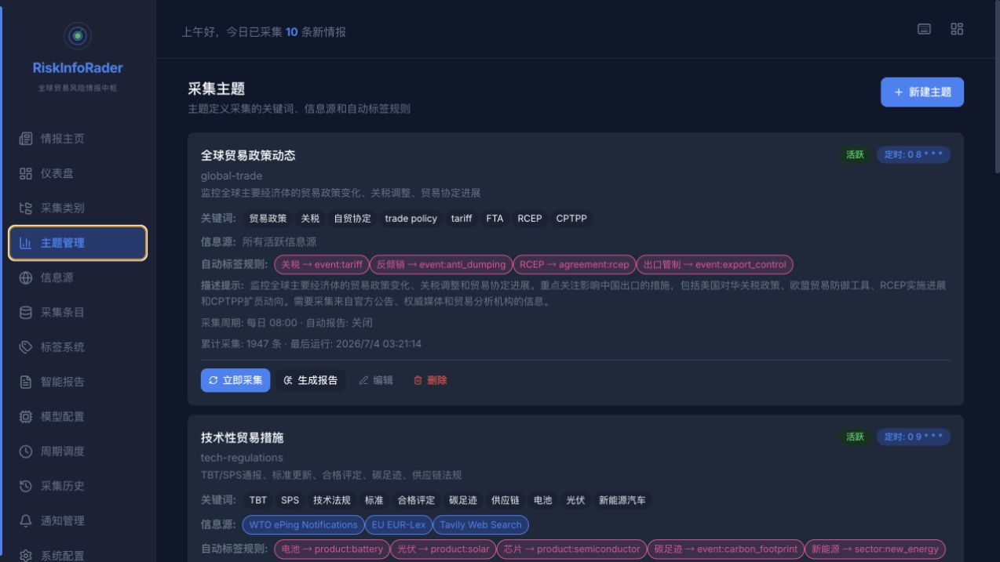
以主题组织采集，而不是以网站组织工作。
主题配置包含关键词、绑定来源、Cron 表达式、采集时间范围、自动报告、自动标签规则、关键词权重和描述提示词。
定义采集意图与过滤条件。
为不同主题绑定不同信息源。
限制采集发布日期范围。
采集完成后触发智能分析。
从采集到报告：一条可追溯的数据流水线。
每一次采集都会产生 `CollectionRun`，同一主题多来源采集共享 `batch_id`，条目入库后继续打标签、全文索引和报告生成。
读取关键词、来源 ID、时间窗口和自动报告设置。
按 source channel 选择 RSS、网页抓取、官方 API 或搜索连接器。
清理正文、剔除空白噪声、抽取实体和内容统计。
按 URL/标题去重，保存来源、批次、时间、语言、分类、质量分。
先摘要信息集合，再综合生成观点化报告。
采集条目页面是风险情报的检索与复核台。
条目支持按主题、来源、标签、语言、批次、关键词检索；保留标题、正文、摘要、URL、发布时间、采集时间、实体、质量评分和标签关系。
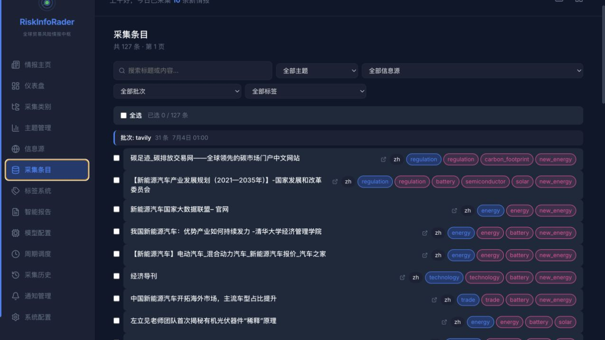
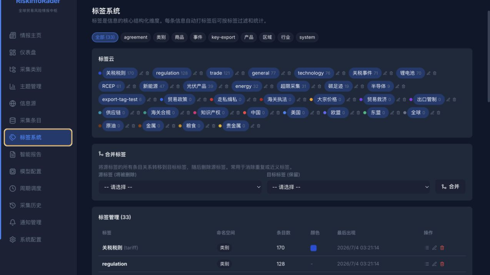
标签把散乱文本变成可聚合的风险维度。
标签采用 `namespace:value` 模式，可覆盖类别、产品、区域、事件、制度、系统标记等维度。系统已支持自动标签规则、连接器建议标签、分类标签和“超限采集”标签。
智能报告先做信息集合摘要，再写综合研判。
报告引擎读取主题下的条目集合，构造包含来源、分类、标签、时间范围、关键证据的上下文，调用本地或 OpenAI-compatible 模型生成 Markdown 报告，并支持导出 MD/HTML/DOCX/PDF。
- 按单主题、指定批次或多主题批量生成。
- 可选择默认模型、本地 Ollama、LM Studio 或自定义兼容接口。
- YMG-Deep 面板可将信息摘要转发到深度分析系统。
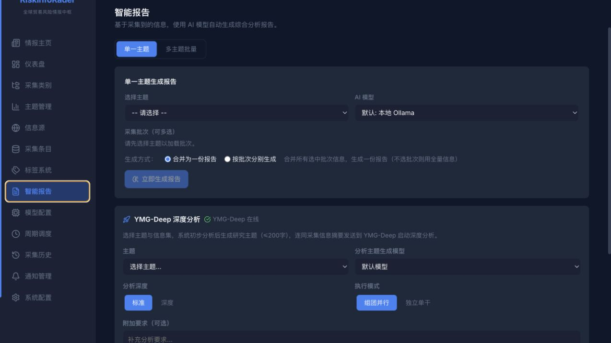
自动调度让监测从“临时查询”变成“持续值守”。
周期调度绑定主题和来源，按 Cron 执行；采集历史按批次呈现，便于复盘一次任务从哪些来源拿到了哪些结果。
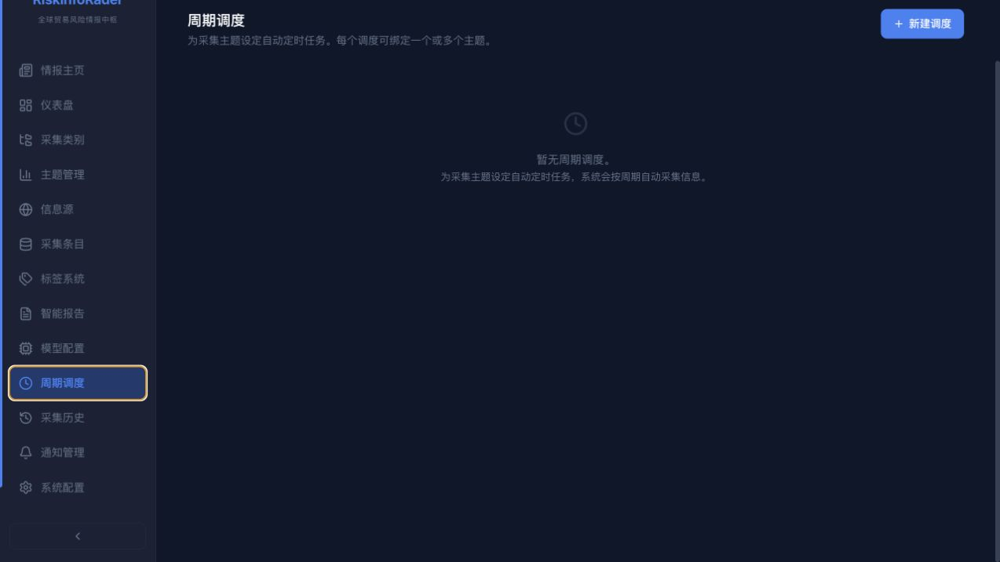
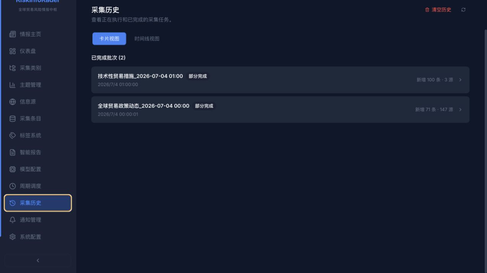
通知系统把采集完成、失败和新增信息推到外部工作流。
通知配置支持 webhook 与 email，采集完成后 fire-and-forget，不阻塞主流程。系统还支持测试通知清理、重复/测试项隐藏，让通知列表保持可读。
Webhook
对接飞书、企业微信、Slack、内部告警系统。
通过 SMTP 环境变量配置，缺失时降级为日志记录。
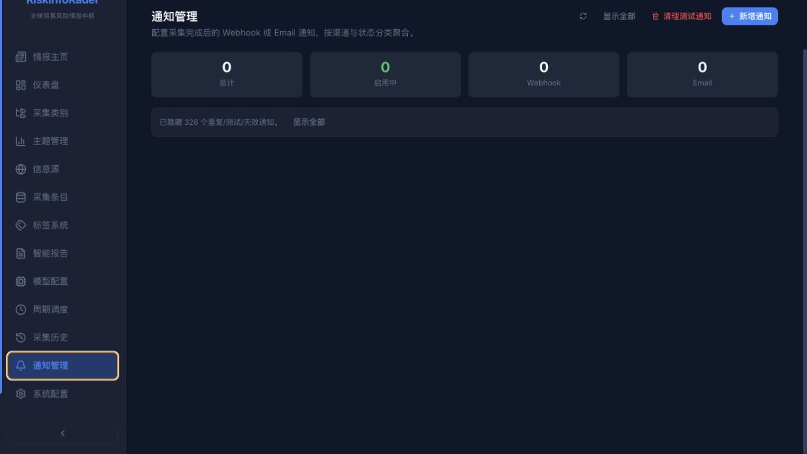
前端轻路由，后端模块化，采集连接器可扩展。
系统以 FastAPI 应用工厂为核心，路由、服务、连接器、引擎、调度器、报告引擎分层组织。前端由 App.tsx 中 ViewId 控制视图切换，无额外路由库。
主题驱动的全球贸易风险情报中枢
核心数据模型围绕来源、主题、批次、条目、标签、报告展开。
SQLite WAL 足以支撑本地单机工作流；`models_additions.py` 在 `init_db()` 时做运行时迁移，降低开发和演示环境升级成本。
信息源配置，记录 channel、URL、认证、采集限制、活跃状态。
采集主题，记录关键词、来源集合、时间窗口、自动报告配置。
每次采集执行记录，包含状态、批次、窗口、错误日志。
核心情报条目，保存标题、正文、摘要、URL、语言、分类、实体。
命名空间标签，和条目多对多关联，支持统计与合并。
智能报告，保存内容、摘要、模型、条目 ID、导出文件。
AI 模型配置，支持本地和 OpenAI-compatible 服务。
报告标题格式、输出目录、导出格式等全局设置。
更稳健可靠：从启动检查到内容质量控制都有防线。
近期修复了后端启动期缩进错误导致前端全站 Bad Gateway 的问题，并新增启动完整性测试，提前捕获语法和导入错误。
启动完整性
编译 `backend/app` 并确认 `create_app()` 能构建，防止后端起不来。
健康检查
`/health` 返回数据库、调度器和系统指标状态。
内容清洗
入库前剔除空白或模板噪声，保留结构化实体和内容统计。
时间窗口
采集遵循主题时间范围，必要超窗条目标记为“超限采集”。
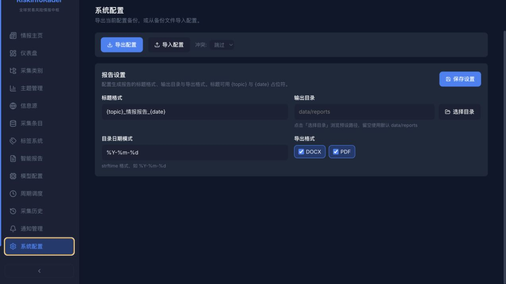
面向海关风险防控的典型使用场景。
监管政策变化监测
持续跟踪 USTR、WTO、EU、MOFCOM、海关总署等来源，识别关税、贸易救济、技术性贸易措施和出口管制变化。
重点商品风险研判
围绕电池、光伏、稀土、半导体、食品安全等商品维度建立标签，形成跨来源证据池。
境外查发案例跟踪
监测海外海关、执法机构、司法部门与媒体发布，沉淀走私违规、制裁规避、虚假申报等案例线索。
贸易壁垒预警
对技术法规、标准、合格评定程序、碳足迹、绿色贸易规则进行专题采集与趋势分析。
合规报告自动化
自动汇总采集批次，生成执行摘要、关键发现、数据概览、趋势研判和建议行动。
情报资产复用
通过标签、批次、全文搜索和导出，把一次采集结果转化为可反复检索和引用的内部知识资产。
下一阶段可继续强化：更准、更自动、更可解释。
平台已经具备从采集到报告的闭环，后续重点是提升采集质量、模型研判稳定性、风险知识图谱和团队协作能力。
高质量正文抽取
继续优化网页正文识别、反模板噪声、发布日期抽取和多语言清洗。
风险评分模型
结合来源可信度、主题相关性、政策影响范围和历史案例形成风险分。
知识图谱
将国家、商品、企业、法规、案例、标签之间的关系可视化。
报告工作流
增加人工审阅、版本比较、批注、审批和导出模板。
部署运维
完善 Docker、Nginx、健康监测、备份恢复、访问控制和审计日志。
从“到处找信息”，到“持续形成证据链”；从“新闻摘录”，到“可复核的风险研判”。
海关风险防控全球信息情报搜集处理平台，将全球公开源信息转化为可治理、可检索、可分析、可报告的本地情报资产。
采集、清洗、标签、报告
海关合规与跨境贸易风险团队
本地 Web 系统 + 静态介绍文件